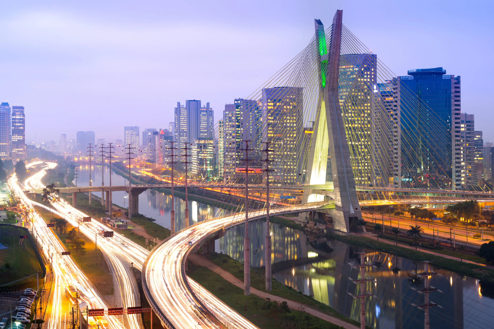

O estado de São Paulo, localizado na região Sudeste do Brasil, é o mais rico e populoso do país. Sua economia é altamente diversificada e representa cerca de um terço do Produto Interno Bruto (PIB) nacional. O estado é um importante centro financeiro, industrial e comercial, abrigando a sede de grandes empresas nacionais e multinacionais. Destacam-se os setores automobilístico, agroindustrial, tecnológico, farmacêutico e de serviços. A agropecuária também tem papel relevante, com destaque para a produção de cana-de-açúcar, laranja e café.

Entre as principais cidades do estado, além da capital São Paulo — que é o maior centro urbano da América do Sul —, destacam-se Campinas, Ribeirão Preto, São José dos Campos, Santos e Sorocaba. Cada uma dessas cidades possui características econômicas e sociais próprias: Campinas e São José dos Campos são polos tecnológicos; Ribeirão Preto se destaca no agronegócio; Santos abriga o maior porto da América Latina, essencial para o comércio exterior.
A população do estado de São Paulo ultrapassa os 46 milhões de habitantes, tornando-o o estado mais populoso do Brasil. Essa grande concentração populacional resulta em uma sociedade diversa, multicultural e urbanizada. A capital, São Paulo, sozinha, tem mais de 12 milhões de habitantes e é considerada uma cidade global, com intensa atividade econômica, vida cultural agitada e desafios urbanos significativos, como mobilidade, habitação e segurança.
O governo atual do estado de São Paulo é liderado por Tarcísio de Freitas, eleito em 2022. Ex-ministro da Infraestrutura, Tarcísio é filiado ao partido Republicanos e tem um perfil técnico-administrativo. Sua gestão tem priorizado investimentos em infraestrutura, privatizações e parcerias público-privadas, com foco em obras de mobilidade urbana, transporte e segurança. Ao mesmo tempo, enfrenta desafios em áreas como educação, saúde e equilíbrio fiscal.
nataly cristina